How the SPECTRUM console is built today: one Python process that simulates the whole model
lifecycle in memory, and one React app that mirrors it live. This page walks through every backend module,
every frontend layer, how data moves between them, how the trust and proof features work underneath, how
each piece would map to AWS, and what is still missing. Everything here was checked against the code in
backend/spectrum/ and frontend/src/.
Backend backend/spectrum/Frontend frontend/src/Run make dev or make demo
How to use this page
If you only have five minutes, read "The big picture" and "Data and realtime". If a judge asks "how does
that actually work?", jump to the matching engine card or to "Security and trust architecture". The screen
pages (for example Swarm Tower) explain each panel; this page explains the machinery
behind all of them.
The big picture
SPECTRUM is a working model of one network AI model's whole life: five operators train it together without
sharing data, it is tested and signed, rolled out to several vendors, used by a governed team of agents to run a
network, and every step is written to a tamper-evident ledger. In this hackathon build, all of that runs inside a
single FastAPI process. An Engine object owns nine sub-engines (federation, proving, release, twin,
swarm, trust, oversight, observability, ledger) and moves them forward ten times a second. Every change becomes an
event on an in-process bus. The browser loads one full snapshot when it connects, then applies the events it
receives on a single WebSocket in batches every 100 ms. Buttons and demo beats are plain REST calls; the change
they cause comes back as events, so every open console (laptop, projector, phone) sees the same thing at the same
time.
LearnVerifyReleaseOperateProve
The five planes, the code behind each, and where you see it
Plane
What it does
Backend
Screen
Learn
Five operators fine-tune one small model with DP-SGD (differentially private training: noise is added so no single record can be recovered). Only masked adapter updates leave each operator; an "enclave" aggregator combines them.
A nine-stage pipeline scores a candidate on accuracy, safety, latency and price, collects signed private scores from each operator, signs an AI-BOM (a bill of materials for the model) and applies a deploy gate.
Ships the model to four targets (two managed AWS, two vendor edges), with one signed manifest per target: shadow, canary 10%, canary 50%, full 100%, with guard metrics and automatic rollback on error rate.
A network digital twin (40 sites, 120 cells) run by 46 agents that talk in signed messages, act only through a policy gateway, and wait for a human on big changes.
There are two ways to run the console. Both use the same code; they differ only in who serves the web page.
Dev mode: make dev
Demo mode: make demo
Processes
Two. Uvicorn runs the API on port 8787 with hot reload. Vite serves the UI on port 5173.
One. make demo first runs vite build into frontend/dist, then starts Uvicorn on port 8787 without reload.
Open in the browser
http://localhost:5173
http://localhost:8787
How the UI reaches the API
Vite proxies /api and /ws to http://127.0.0.1:8787 (override with the SPECTRUM_API environment variable).
Same origin. main.py mounts frontend/dist/assets and answers every other path with the file, or with index.html so client-side routes work.
Reachable from phones
Yes: Vite runs with host: true and the API binds 0.0.0.0.
Yes: Uvicorn binds 0.0.0.0.
Environment.SPECTRUM_MODE (mock by default, or aws) and SPECTRUM_SEED (default 7) are read once at start-up in main.py.
Phones. The phone approval page is /m/approve. The Demo Director's Preflight tab draws a QR code for it. When the console is open on localhost, the QR code uses the laptop's LAN address, which GET /api/director/preflight works out by opening a UDP socket.
Presenter laptop./presenter is a second-screen driver with a talk timer (7-minute target, amber from 6:30). It fires beats without navigating itself; every console screen follows the server's beat.
Many screens, one state. All state lives in the backend process. Any number of browsers can connect; each gets its own WebSocket queue. Phones, the presenter page and the dossier page are "bare" routes: they do not draw the console frame. The phone and presenter pages open their own live connection; the dossier page makes one GET /api/dossier/{incident} request (which also appends a ledger record) and does not follow the stream.
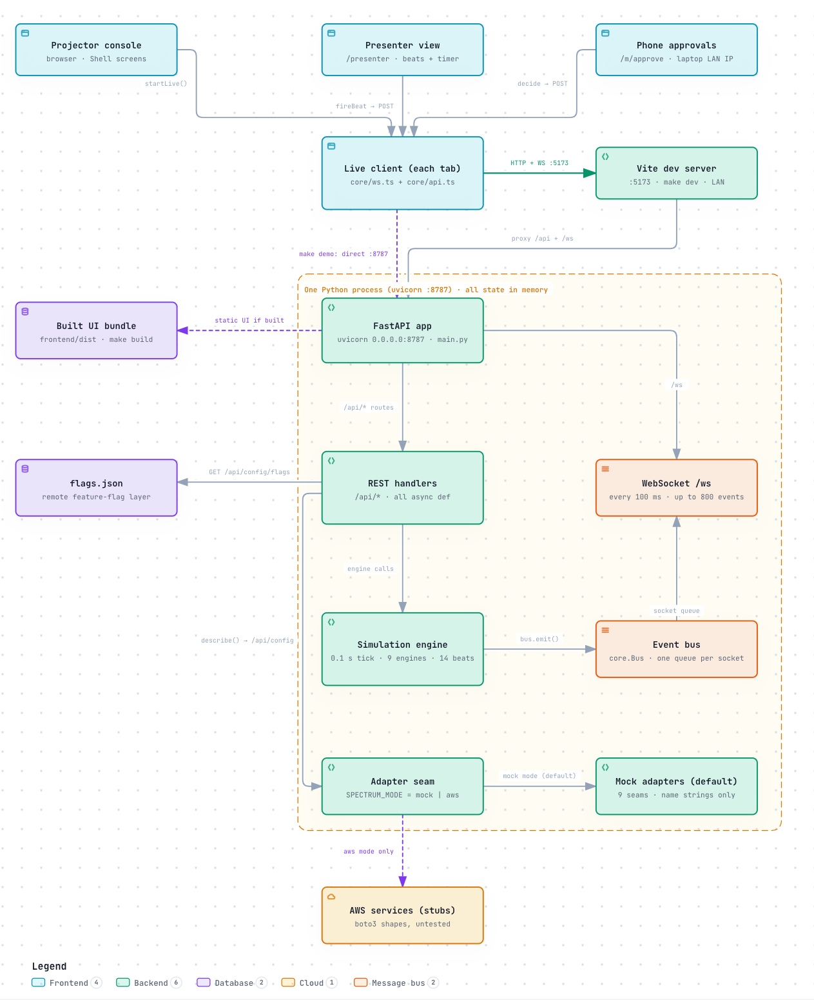
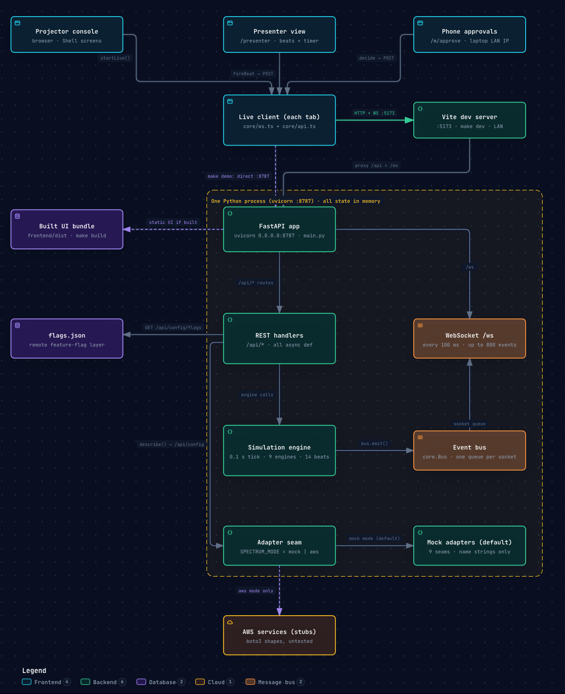
System context and runtime topology: browsers, phones and the presenter laptop around the single backend process. Click the diagram to enlarge it. Open the interactive version
Backend
The backend is plain Python 3.12+ with four runtime dependencies: FastAPI, Uvicorn, NumPy and
cryptography (for Ed25519). boto3 is an optional extra for AWS mode. There is no
database: everything is held in memory and rebuilt from a seed on reset.
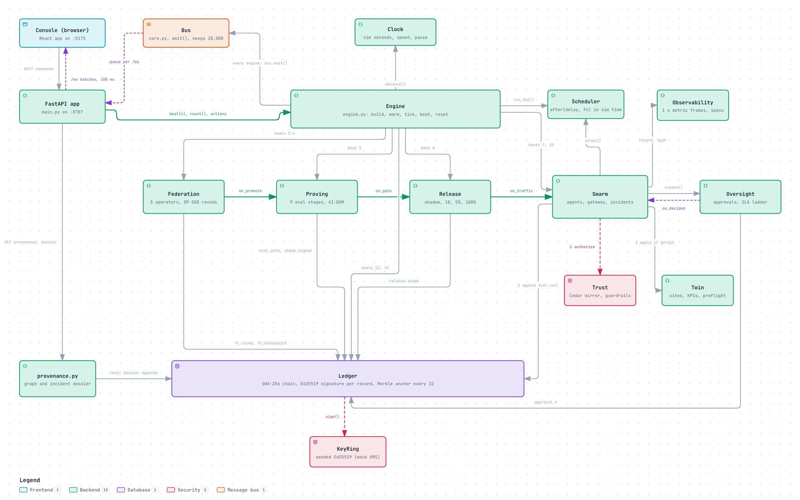
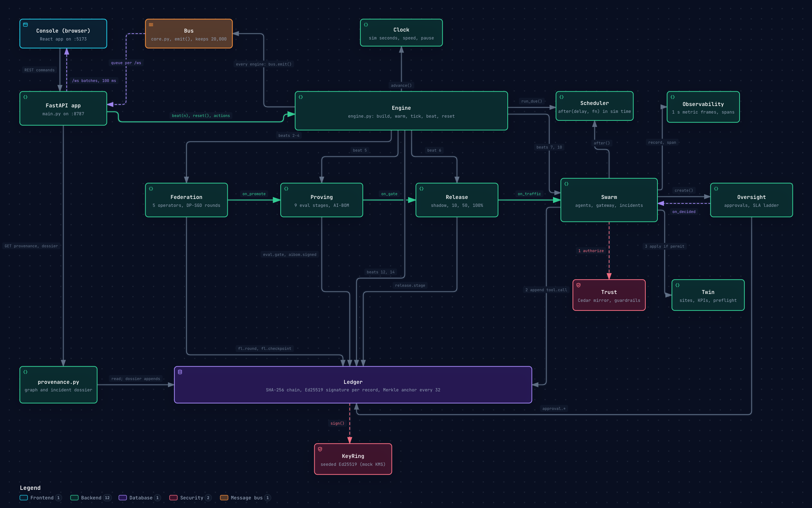
The Engine, its nine sub-engines and the event bus they all write to. Click the diagram to enlarge it. Open the interactive version
Shared primitives: core.py
Every engine is built on the same five building blocks. They are small, but the trust story depends on them.
Piece
What it does
Why it matters
normalize(), canonical(), sha256_hex()
normalize turns every float into a fixed-precision string (%.6g), dictionary keys into strings and NumPy scalars into Python values; anything else raises an error. canonical then writes JSON with sorted keys, no spaces and UTF-8.
A ledger record must hash to the same value in Python and in the browser. Removing floats removes the one place the two languages format numbers differently. The browser twin is frontend/src/core/canonical.ts.
KeyRing
A stand-in for a key service. Each key id (for example kms:spectrum/agent/site-17) gets an Ed25519 private key derived as SHA-256 of "{seed}:{key_id}". It can sign, verify, give the public key and a fingerprint, and record a revocation time.
Keys are deterministic, so after every reset the same records get the same signatures. In AWS mode this is meant to become KMS Sign and Verify.
SIM_EPOCH, Clock
Simulation time in seconds since Saturday 31 October 2026, 21:30 Pacific (UTC−7). advance(real_dt) adds real_dt × speed, or nothing when paused. iso() turns sim time into a timestamp.
Pausing or speeding up the clock pauses or speeds up everything: training, scripts, SLA timers.
Bus
emit() builds an event envelope, gives it the next sequence number, keeps it in a 20,000-event history (unless record=False), and puts it on every subscriber queue (each holds up to 50,000; when full, the event is dropped for that subscriber). muted stops fan-out but keeps history.
It is the only way data leaves an engine. The WebSocket layer is just one subscriber per browser.
Scheduler
A heap of callbacks due at a sim time, each with a tag. after(delay, fn, tag), cancel(tag), run_due().
Runs the scripted incident (tag incident) and attack (tag attack) step by step on the sim clock.
The orchestrator: engine.py
Engine(seed=7) is created once when main.py is imported. Its build() method
creates the clock, bus, key ring and scheduler, then the nine sub-engines, passing each one the shared pieces it
needs. Engines do not call each other except through the references build() hands them (Proving only imports Federation's static OPERATORS list). Three callbacks connect the
lifecycle end to end:
Federation promotes a checkpointfl.on_promote
Proving registers a candidatecandidate_from_checkpoint; when the gate passes, on_gate
Release starts shadowstart_shadow; every stage change calls on_traffic
Swarm switches site agentsset_model_cohort(version, pct)
Everything else is a direct method call: the swarm calls Trust, Twin, Oversight and Observability; almost every
engine calls Ledger.append; Oversight calls back into the swarm when a human decides.
The main loop
run() is an asyncio task started by FastAPI's lifespan hook. Every 100 ms it calls
tick() with the real time that has passed. If a tick throws, it emits a critical
system.error event and keeps going, so the demo never freezes silently.
tick(real_dt) returns straight away while a reset is rebuilding (building flag) or
while the clock is paused. Otherwise it runs due scheduler callbacks, then ticks federation, proving, release,
twin and swarm with the sim-time step, then trust, oversight and observability. Once per sim second it emits
sim.clock.
_obs_extra() hands Observability the per-plane baselines (request rate, errors, p95 latency,
saturation) and each operator's GPU use, partly taken from live engine state (is training running? what are the
release guard values?).
Warm-up: how the demo starts in a rich state
warm() fast-forwards about two hours of history in roughly two seconds (the live server reported
warm_ms 1968 in GET /api/config). With the bus muted, it:
moves the clock to −7,500 s and creates six past approvals (APR-311 to APR-316), each approved by a named human;
runs the swarm's routine life from −7,400 s to −320 s, which writes thousands of signed tool calls and agent messages to the ledger;
runs 12 complete federated rounds with the real round simulator at 10 Hz, ticking proving, release and observability alongside;
ticks the twin, swarm and observability for the last two seconds so live charts have data;
sets the clock to 0, adds a synthetic trace for an earlier incident (INC-2040), then clears the event history and sets the sequence number back to 0.
One detail matters on stage. When the server starts, warm-up ends with round 13 already training. When you
reset (POST /api/director/reset, or hold r), warm-up runs with hold=True, so
round 13 stays queued (federation state ready) until beat 2 starts it. The README puts the reset
state at about 3,400 signed ledger records. The event stream is empty after a reset even though the ledger is
full, because warm-up clears the history.
Reset
reset() saves the set of connected WebSocket queues, sets building, rebuilds every
engine from the seed, re-attaches the queues to the new bus and emits system.reset. Each browser
reacts to that event by fetching a fresh snapshot.
The 14 demo beats
BEATS is a list of 14 dictionaries: number, title, route, spotlight panel ids, duration in seconds
and presenter note. The list is sent to the browser in the snapshot, so the Demo Director, the presenter page and
the palette all read the same script. beat(n) records the beat number and start time, runs the
beat's action, and emits director.beat. Durations add up to 405 s (6 min 45 s).
#
Title
Route
What the backend does
1
Cold open
/
Nothing beyond recording the beat.
2
Federated round, live
/federation
_beat_round: starts training if the run is ready, paused or idle.
3
What the aggregator sees
/federation
Sets the server flag fl.reveal = True and emits no event. No screen reads it, so nothing changes on screen. To show the true updates, click "Show true updates" in the Secure aggregation panel header; the button exists only when the demo.privileged_view flag is on, and it swaps the masked heatmaps for the true ones.
4
Poisoned update
/federation
fl.client("op-e", "poison"): Op-E's next update will be poisoned.
5
Proving Ground gate
/proving
_beat_eval: if no candidate is pending, promotes the latest checkpoint (saving one first if none exists), then starts an evaluation run unless one is running.
6
Shadow, then canary
/release
_beat_canary: puts the pending candidate in shadow if the release has no candidate, then advances from shadow to canary 10%.
7
Incident hits
/swarm
swarm.start_incident(): fibre cut on T3 plus stadium surge, and schedules the whole incident script.
8
Agents negotiate
/swarm
Nothing new. The negotiation scheduled by beat 7 plays out (6.6 to 9.2 sim seconds after the incident opens).
9
Human approval
/oversight
Nothing new. The approval request was created by the beat 7 script (12.2 s after the incident opens). The Oversight Desk selects it.
10
Prompt-injection attack
/swarm
swarm.telemetry_injection("site-17"): a poisoned syslog line and a three-step scripted attack.
11
Provenance
/audit
Nothing on the server. The Audit page reloads the provenance graph.
12
Tamper test
/audit
ledger.tamper(): edits one anchored record in place. The Audit page starts a verification 1.2 s later.
13
Cost and traces
/observability
Nothing on the server. The Observability page selects the incident trace.
14
Close the loop
/
_beat_loop: writes a loop.enqueue ledger record and event: the incident becomes private training data at Op-A for the next round.
snapshot() returns one JSON object with seq, clock, director,
one key per engine (federation, proving, release, twin,
swarm, trust, ledger, oversight, observability)
and stream, the last 400 recorded events. Each engine decides how much history to include, for
example the ledger sends only its last 150 records and 60 anchors.
The nine sub-engines
Each card says what the engine is for, what it keeps in memory, its key methods, the events it emits, the
ledger records it writes and who it talks to. The AWS line repeats what the file's docstring says the engine
would use in production; none of that is implemented (see AWS mapping).
The tamper-evident record of everything that matters. This part uses real cryptography even in mock mode.
How it works
State
records (every record, in memory), anchors, originals (copies of tampered records), last_verify (cached result).
Append
append(type, actor, plane, payload, key_id) builds the body {seq, ts, type, actor, plane, payload, key_id} with the payload normalized. Then hash = SHA-256(canonical(body) + prev_hash), starting from a genesis of 64 zeros, and sig = Ed25519(key_id, hash). If no key is given it uses kms:spectrum/{actor}.
Anchor
Every 32nd record triggers _anchor(): a Merkle root over those 32 hashes (an odd last node is paired with itself) stored as an anchor object with an s3://spectrum-ledger-anchors-us-west-2/anchors/NNNNNN.json URI, object_lock: COMPLIANCE and a retain-until date 2,555 days (about 7 years) after the last record. The version id and ETag are derived from the root; nothing is written to S3.
Verify
verify() walks from genesis, recomputing each hash, checking the link to the previous hash and checking the signature. It stops at the first failure and reports the record, which checks failed, both hashes, a field-level diff against the saved original and the covering anchor. It also recomputes every anchor root.
Proof
proof(seq) recomputes the record's hash from its current body and builds the Merkle path to its anchor. A tampered record yields a root that no longer matches the stored anchor.
Tamper
tamper(seq) (demo) picks the latest anchored human approval, otherwise the latest anchored tool call, saves the original and changes one field: flips decision, or sets params.blast_radius_pct to "2", or adds tampered: true. restore() puts the originals back.
Emits
ledger.append (every record), ledger.anchor, ledger.verify (notice when clean, critical when broken), ledger.tamper. ledger.restore is emitted by main.py after a restore; the store uses it to clear the tampered state.
Talks to
Called by every engine that writes a record. Read by provenance.py and several endpoints.
AWS (planned)
Records in DynamoDB, anchors as S3 objects with Object Lock in COMPLIANCE mode, signatures from KMS.
Controls
Control
What it does
What changes
POST /api/ledger/verify
Full chain verification
Audit & Proof verify run and the palette; emits ledger.verify
POST /api/ledger/tamper, /restore
Demo tamper and undo
Audit & Proof, beat 12 and the palette (flag demo.tamper); emits ledger.tamper or ledger.restore
GET /api/ledger/{seq}, /proof/{seq}
Read one record and its Merkle proof
Inspector and Audit & Proof; no state change
2
Trust
engines/trust.py
What it is for
Decides whether an agent may do something, independently of the agent. Also scans text for prompt attacks,
checks delegation chains and holds the enclave attestation shown in the UI.
How it works
State
13 Cedar policies, P-001 to P-013, each with its text, a SHA-256 hash and a version; the last 600 decisions; permit, deny and needs-human counts; hits per policy; denies by action and by principal; guardrail counters and blocks; delegation checks; 10-second buckets for the decisions chart; a static attestation record; policy store id ps-7f3a9c21e4b04d1a.
Authorize
authorize(principal, action, resource, context) is hand-written Python that mirrors the Cedar text. Forbid rules first: quarantined principal (P-008), sleeping a hospital or PSAP cell (P-001), sleeping or restarting more than 6 targets (P-007), unauthorised delegation hops (P-006). Then permits by action group: observe (P-011), transport changes by the transport agent (P-004), radio changes by a site agent on its own neighbourhood (P-002), by the coordinator with a plan id (P-005) or by the energy agent for sleep and wake (P-010), ops actions for domain agents and the coordinator (P-013), deploy (P-012). A permitted radio change without human approval becomes "needs human" if the blast radius is over 5% (P-003) or the agent's autonomy is below 3 (P-009). Order of precedence: deny, then needs human, then permit, then default deny.
Delegation
check_delegation(chain, ...) evaluates the action for every agent in the chain; if any hop is denied, the whole request is denied (P-006).
Guardrails
scan(text, source) matches four regular expressions (for example "ignore prior rules", "coordinator authorises"). A match counts as a prompt attack and emits guardrail.block.
Emits
policy.decision, guardrail.block.
Ledger
None directly. A gateway decision is written inside the swarm's tool.call record. Two kinds of check are not ledgered at all: the "needs human" pre-checks the incident runs before opening its approval, and the delegation check in the attack. They appear in the Trust Center only.
Talks to
Called by the swarm (every tool call, every suspicious message, the delegation check) and by POST /api/trust/test with record=False, which evaluates without counting or logging.
Evaluates a hypothetical request with record=False; no counters, no events, no ledger record
(everything else)
No other controls of its own
Driven by the swarm gateway and message checks
3
Twin
engines/twin.py
What it is for
A small simulated radio network that agents act on and that predicts the effect of a plan before it runs.
How it works
State
40 sites on an 8 × 5 hex grid, 3 cells each (120 cells). Each site has a hub (H1 to H5), tags (6 stadium sites; hospitals at s-06 and s-35; a PSAP, the emergency call centre, at s-27), a vendor (A or B) and live values. Three cells near the stadium start asleep. Links: fibre T1 to T5 (40 Gbps, hub to core) and microwave MW1 to MW5 (12 Gbps backup between hubs). Alarms, a 900-point health series, recent actions.
Simulation
Every sim second tick() nudges each site's base demand with a small random walk and calls compute(): capacity from awake cells and power boost (cut to 2% when backhaul is down, 90% on microwave), then PRB load (radio resource use), users, throughput, dropped calls and power draw. kpis() rolls these up into health %, stadium congestion and drops, throughput, users, energy and sleeping cells.
Faults
inject(kind): fiber_cut, stadium_surge, power_outage, interference. Each raises an alarm.
Actions
apply(tool, params, actor) for reroute, cell_wake, cell_sleep, set_tx_power, load_balance; set_handover_offset is accepted but changes nothing.
Pre-flight
preflight(steps) saves the twin, applies the plan silently, measures KPIs, restores everything and returns before and after values plus the blast radius: (cells named in the steps + receiving sites in a load_balance) ÷ 120. The incident plan gives (3 + 6 cells + 6 sites) ÷ 120 = 12.5%. Only reroute, cell_wake, set_tx_power and load_balance steps are applied.
Emits
twin.alarm, twin.action, twin.tick (every second, with a compact row per site; not kept in history).
Talks to
Called by the swarm (actions, pre-flight, the incident's faults) and directly by POST /api/twin/inject for the four fault kinds. Writes no ledger records itself.
AWS (planned)
The same simulator on ECS or Fargate, publishing ticks to Kinesis.
Controls
Control
What it does
What changes
POST /api/twin/inject with fiber_cut, stadium_surge, power_outage or interference
Injects one fault
Swarm Tower and the palette ("Inject fault: uplink interference at s-08"); emits twin.alarm, no ledger record
(actions)
No direct action controls
Every change to the network goes through the swarm gateway
4
Federation
engines/federation.py
What it is for
Simulates federated LoRA fine-tuning (training a small add-on to a base model) across five operators, with a
real secure-aggregation calculation inside each round.
How it works
State
Five operators, Op-A Cascadia Mobile to Op-E Tessellate Fiber, each with a sample count and speed. Config: 30 rounds, noise multiplier σ 1.1, clip norm 1.0, target ε 3.0, δ 1e-5, strategy trimmed_mean, secure-aggregation mode enclave, auto-checkpoint every 2 rounds, LoRA rank 16 on q, k, v, o. Run fl-2026-10-31-a on llama-3.2-1b-instruct. Run state idle, ready, running, paused, stopped or complete; round log; checkpoints; latest secure-aggregation result; byte counters for data sovereignty.
A round
Pull 1 s, train 16 s divided by the operator's speed (240 steps), secure 1.4 s (1.6 times longer in he mode), upload 1.6 s, aggregate 2.6 s. A round waits for the slowest operator: Op-D (speed 0.86) trains for about 18.6 s, so a round takes about 25 sim seconds. During training ε grows step by step with an approximation that accumulates ε² so σ can change mid-run. At 90% of the target the operator gets a warning; at 100% it leaves the federation.
Secure aggregation
_compute_secagg() builds a 16 × 16 update per operator, converts it to integers (scale 216, modulo 232), adds pairwise random masks (10 pairs for 5 operators) that cancel in the sum, and records the largest difference between the masked sum and the true sum (always 0). The "host view" is the masked values scaled to −1..1.
Robust aggregation
_finish_round() rejects any update whose norm is above median + 4 × max(MAD, 0.04) (MAD is the median absolute deviation, a spread measure that one outlier cannot inflate), but only when mode is enclave and strategy is not fedavg. A poisoned update has 14.2 times the median norm. Otherwise the poisoned update is accepted and loss rises by 0.34. Loss and accuracy follow a formula plus noise.
fl.run, fl.round.phase, fl.step (4 per second while training), fl.gradhist (1 per second), fl.upload, fl.secagg, fl.poison, fl.round, fl.budget, fl.checkpoint, fl.promote, fl.config, fl.client.
Ledger
fl.round (participants, accept or reject decisions, ε per operator, data commitments), fl.checkpoint, fl.config, fl.restore, fl.stop.
Talks to
on_promote hands a checkpoint to Proving.
AWS (planned)
One ECS task per operator running a Flower client with Opacus; aggregator in a Nitro Enclave; checkpoints in S3; ε from the Opacus RDP accountant.
Controls
Control
What it does
What changes
POST /api/fl/{start|pause|resume|stop|next_round|checkpoint}
Run control
Federation Center, beat 2 and the palette ("Save checkpoint now"); emits fl.run or fl.checkpoint
POST /api/fl-config, GET /api/fl/projected_eps
Change training settings; preview final ε
Federation Center; a config change emits fl.config and is ledgered
POST /api/fl/client/{op}/{pause|drop|poison}
Act on one operator
Federation Center and beat 4; emits fl.client
POST /api/fl/checkpoint/{id}/{restore|promote}
Restore or promote a checkpoint
Checkpoints panel; promote hands the checkpoint to Proving
POST /api/fl/reveal
Sets fl.reveal
Nothing visible: no screen reads it and no event is emitted
5
Proving
engines/proving.py
What it is for
The Proving Ground: decides whether a new checkpoint is good enough to ship, and signs what was tested.
How it works
State
Nine models with illustrative scores (four of ours: nlm-v5, nlm-v6 in production, nlm-0.5b, nlm-v7-3b; five baselines: base Llama 3.2 1B, Nova Lite, Nova Pro, Claude Haiku, Claude Sonnet). 7 task categories, 7 attack classes totalling 64 attacks, 9 stages, the gate thresholds, AI-BOMs, federated scores, past runs.
Candidate
candidate_from_checkpoint(ck) creates the next model (nlm-v7 on the first promotion) with accuracy = min(0.93, nlm-v6 + 0.03 + 0.004 × (round − 12)).
Pipeline
run(model) starts eval-00NN with a Step Functions-style ARN. Stages: Ingest 1.2 s, Static checks 1.4 s, Accuracy 3.6 s, Safety red-team 4.0 s, Performance 2.4 s, Price 0.8 s, Federated eval 3.0 s, Sign AI-BOM 1.0 s, Gate 0.6 s (18 s in total).
Federated eval
Five per-operator scores (random around the model's accuracy), each signed with that operator's key, with data_left_bytes: 0.
AI-BOM
spectrum.ai-bom/v0.2: base model and hash, adapter hash, training run, DP settings, secure aggregation, operator data commitments, evaluation suite hashes. SHA-256 over its canonical form, signed with kms:spectrum/aibom. verify_aibom() recomputes the digest and checks the signature.
Gate
safety ≥ 0.95, accuracy ≥ 0.85, p95 ≤ 600 ms, price ≤ $1.00 per 1K tasks (usd_per_1k). The check uses these constants directly; the ledger record names policy P-012.
Emits
eval.candidate, eval.run, eval.progress (2.5 per second, not kept), eval.stage, eval.federated, aibom.signed, eval.gate.
Ledger
eval.federated, aibom.signed, eval.gate.
Talks to
on_gate starts a shadow release when the gate passes.
AWS (planned)
Step Functions, SageMaker Processing, Bedrock model evaluation, KMS-signed AI-BOM.
Controls
Control
What it does
What changes
POST /api/eval/run
Start an evaluation run
Proving Ground, beat 5 and the palette; emits eval.run, then stage events
GET /api/eval/aibom/{model}/verify
Re-check the AI-BOM digest and signature
Proving Ground; no state change
6
Release
engines/release.py
What it is for
Rolls a candidate out in stages to several targets and rolls it back when a guard is breached.
How it works
State
Four targets: SageMaker endpoint, Bedrock Custom Model Import, Vendor A EMS edge, Vendor B EMS edge, each with version, traffic share, state, p95, error rate, health and a signed manifest. Stages: shadow (0%), canary 10%, canary 50%, full 100%. Guard limits: error rate ≤ 1%, p95 ≤ 600 ms, 0 safety incidents, agreement ≥ 90%. Production nlm-v6, candidate, stage, paused, regression, shadow agreement series, disagreements, history.
Methods
start_shadow(version), advance(), rollback(reason, auto). Manifests (image digest, adapter hash, stack, vendor dialect, IaC hash) are signed with kms:spectrum/release.
Tick
Every second: new p95 and error rate per target (plus 260 ms and 1.6% errors on targets carrying traffic when a regression is injected). At canary or later, an error rate above 1% triggers an automatic rollback. Every 2 seconds while a candidate exists: a shadow comparison draw (94% identical; otherwise the candidate wins 85% of the time) that feeds the agreement chart and the disagreement list.
Emits
release.stage, release.metrics (every second, not kept).
Ledger
release.stage for every shadow, stage change and rollback.
Talks to
on_traffic tells the swarm how many site agents should run the candidate.
AWS (planned)
SageMaker endpoint variants or inference components, Bedrock Custom Model Import, ECS services at the edge, one CDK stack per target.
Controls
Control
What it does
What changes
POST /api/release/{advance|rollback|shadow}
Move the rollout
Release Center (advance, rollback), Proving Ground (shadow), beat 6 and the palette; emits and ledgers release.stage
POST /api/release/regression
Demo: inject a latency and error regression
Release Center; error rate above 1% at canary or later rolls back automatically
POST /api/release/pause
Toggles paused
Shown as "Paused" but nothing reads it (see Known gaps)
7
Swarm
engines/swarm.py
What it is for
The agents that run the network, the gateway every action passes through, and the scripted incident and
attack scenarios.
How it works
Agents
46: a coordinator (labelled claude-sonnet), five domain agents (Transport and Experience and Security sentinel on claude-haiku, Energy on nova-lite, Core on nova-pro) and 40 site agents on nlm-v6, each allowed to act on its own site and its hex neighbours. Autonomy: site L4, domain L3, coordinator L3. Each has a key id, a trust score, a state and token and cost counters. The counters are named tokens_1h and usd_1h and the Inspector labels them "Last hour", but they are never reset, so they count everything since the last reset, including about two hours of warm-up.
Thinking
_think() makes no model call. It draws a latency and token counts for the agent's model, records the cost in Observability and adds a gen_ai.chat span.
Messages
send() builds an agent-to-agent message, hashes its canonical form, signs it with the sender's key and checks: signature valid and key not revoked; claimed authority equals the sender; guardrail scan when authority does not match or the text mentions authority. Verdict delivered or blocked. Every message is ledgered.
Gateway
gateway() is the only path to the twin: kill switch (when frozen, everything except get_kpis and simulate_change is denied), then trust.authorize, then a tool.call ledger record, trace spans, and twin.apply only on permit. Trust score drops 6 on a deny and rises 0.15 on a permit.
Routine life
Every 2.5 to 6 sim seconds a random site agent adjusts a handover offset; sometimes it informs the coordinator and a domain agent reads KPIs.
Incident
start_incident() opens INC-2041 "Fibre cut T3 during stadium let-out" with seven phases (Detect, Diagnose, Negotiate, Pre-flight, Approve, Execute, Verify) and schedules: detect (1.0 s), diagnose and delegate to transport (2.6 s), reroute over MW3 (3.8 s, permitted by P-004), neighbour requests (5.2 s), Experience proposes option B (6.6 s), Energy objects and prefers D (7.8 s), coordinator brokers C with Energy's dissent recorded (9.2 s), pre-flight on a twin fork (10.8 s), approval request (12.2 s, tier high, P-003). After approval, the remaining three steps run 0.8 s apart through the gateway with human_approved, then verify, then resolve with MTTR and cost.
Attack
telemetry_injection("site-17"): a syslog line carrying an instruction; at 0.9 s site-17 asks to sleep all 120 cells (denied by P-001 and P-007); at 2.2 s it sends four messages claiming the coordinator's authority (blocked) and a delegation check through transport is denied; at 3.4 s site-17 is quarantined, site autonomy drops from L4 to L3, and a critical approval to release it is created (two approvers, ten-times-longer SLA).
Other methods
quarantine, release (new key id), set_autonomy, set_model_cohort, freeze.
Emits
a2a.msg, policy.decision (only for a kill-switch deny; other decisions are emitted by Trust), swarm.agents (only changed agents, at most twice a second, not kept), incident.opened, incident.phase, negotiation.round, negotiation.resolved, plan.preflight, plan.step, incident.resolved, twin.syslog, attack.denied, delegation.check, autonomy.change, identity.revoked, identity.reissued, swarm.cohort, swarm.freeze.
Trust, Twin, Oversight (creates approvals with an on_decided callback), Observability, Ledger, Scheduler.
AWS (planned)
Strands Agents on Bedrock AgentCore Runtime, tools served as MCP through AgentCore Gateway, AgentCore Identity, agent-to-agent over AgentCore (the docstring says to verify region support) with an EventBridge or SQS fallback.
Controls
Control
What it does
What changes
POST /api/twin/inject with incident or telemetry_injection
Start the scripted incident or attack
Beats 7 and 10, Swarm Tower and the palette
POST /api/swarm/{freeze|resume|pause}
Kill switch; pause routine actions
Top bar Freeze (press and hold), "Frozen: resume", Swarm Tower and the palette. Freeze and resume are ledgered; pause emits nothing
POST /api/agents/{id}/{quarantine|release}
Quarantine or release one agent
Inspector agent view and the Agent roster. Release here skips the two-person approval (see Known gaps)
POST /api/autonomy
Set a class's autonomy level
Autonomy panel; emits and ledgers autonomy.change
8
Oversight
engines/oversight.py
What it is for
The human-in-the-loop queue: decisions agents may not make alone, with deadlines and escalation.
How it works
State
Items APR-NNN (numbering starts at 311), their callbacks, three people (A. Rivera, NOC engineer, L1; J. Okafor, on-call lead, L2; M. Chen, duty manager, L3) and the ladder: L1 120 s, L2 300 s, L3 600 s.
Create
create(...) stores the plan, pre-flight, reasons, dissent and model opinions, sets required to 2 for critical tier and 1 otherwise, and writes approval.requested.
Decide
decide(id, decision, by, device, reason, changes). Approve: the same person cannot approve twice (four-eyes); the decision is signed with kms:spectrum/human/<id> and ledgered; the item is approved when it has enough approvals. Reject ends it. Escalate moves it up one level. On a final decision it calls the callback.
Tick
When the current level's SLA (times sla_scale) passes, the item escalates; past L3 it is set to expired silently, with no event, no ledger record and no callback.
Created by the swarm and by warm-up. main.py adds one rule: approving a plan whose id starts with restore- releases that agent from quarantine.
AWS (planned)
Step Functions task tokens, SNS or Incident Manager for paging, Cognito sign-in, KMS keys per approver.
Controls
Control
What it does
What changes
POST /api/approvals/{id}/{approve|approve_with_changes|reject|escalate}
Decide an approval
Oversight Desk and the phone page /m/approve; emits and ledgers approval.decision (or escalation)
9
Observability
engines/observability.py
What it is for
Metrics, traces and cost for the whole system, shaped like OpenTelemetry and CloudWatch data.
How it works
State
The last 600 metric frames, 180 latency-heatmap columns, 4,000 model calls, token and cost totals per model, spans per trace (the last 30 traces), five seeded incident costs, per-class agent health, and a price table in USD per million tokens labelled "modelled".
Record
record_call() prices tokens with the price table; record_tool(), note(), span(), new_trace().
Tick
Every sim second: one heatmap column from recorded tool latencies plus 40 random background samples plus recent model calls; tokens per minute over the last 60 s; golden signals per plane (baselines from the engine plus noise); one obs.metrics frame.
SLOs
slos() returns five fixed objectives with fixed current values and burn rates.
Emits
obs.metrics, obs.span, obs.trace (none kept in history).
Ledger
None.
AWS (planned)
ADOT collector to X-Ray and CloudWatch (EMF metrics, GenAI and AgentCore observability).
Controls
No controls of its own. It is fed by the engine tick and by the swarm's model calls, tool calls and spans.
Provenance and dossier: provenance.py
Two functions assemble answers from the ledger and engine state. Neither keeps state of its own.
build(engine) (GET /api/provenance/latest) picks an action: the latest
permitted tool call with human approval, else the latest reroute call (whatever its decision), else
the latest permitted call. It then walks backwards: action → policy decision → human approval → executing agent →
(only when that agent does not run an NLM, for example the coordinator) a site agent shown as the plan proposer,
preferring one in the canary cohort → model → AI-BOM → gate record → checkpoint → federated
round → each operator's ε and data commitment, plus the enclave attestation. If the checkpoint is from an
earlier run, it uses what the signed AI-BOM says about training. It returns nodes and edges for the graph.
dossier(engine, incident) (GET /api/dossier/{incident}) collects the
incident's ledger range, a timeline (without "inform" messages), approvals with their history, the policies used
with versions and hashes, a full chain verification, the overlapping anchors and the models in use. It hashes
the canonical body and appends a dossier.generated record signed by the auditor key, so every call
adds a ledger record.
The API: main.py
All REST endpoints, grouped. Commands change engine state and the result reaches every browser as events; reads
return data straight to the caller.
Group
Endpoint
What it does
Config and snapshot
GET /api/config
Mode, seed, version, warm-up time, adapter descriptions, region.
GET /api/config/flags
Remote feature flags from flags.json, re-read on every call.
GET /api/snapshot
The full engine snapshot.
Simulation
POST /api/sim
Body {paused?, speed?}. Speed is clamped to 0.25–10 (the UI offers 0.5×, 1×, 2×, 5×). Emits a recorded sim.clock.
Body {changes}. Changes training settings; ledgered.
GET /api/fl/projected_eps
?sigma=&rounds=: projected final ε per operator.
POST /api/fl/checkpoint/{id}/{action}
restore or promote.
POST /api/fl/client/{op}/{action}
pause, drop, poison.
POST /api/fl/reveal
?on=: sets a server flag that no screen reads; emits no event.
Verify and release
POST /api/eval/run
Body {model?}. With no model and no candidate, promotes the latest checkpoint first.
GET /api/eval/aibom/{model}/verify
Recomputes the AI-BOM digest and checks its signature.
POST /api/release/{action}
advance, rollback, pause (toggles a flag), regression (demo), shadow.
Twin and swarm
POST /api/twin/inject
Body {kind, target?}: incident, telemetry_injection, fiber_cut, stadium_surge, power_outage, interference.
POST /api/swarm/{action}
freeze, resume, pause (routine actions only).
POST /api/autonomy
Body {cls, level, reason}; ledgered.
POST /api/agents/{id}/{action}
quarantine or release.
Oversight
POST /api/approvals/{id}/{decision}
approve, approve_with_changes, reject, escalate; body {by, device, reason, changes}.
Trust
POST /api/trust/test
Policy test bench: evaluates a hypothetical request with no side effects and returns the measured evaluation time.
Ledger and provenance
POST /api/ledger/verify
Full chain verification.
POST /api/ledger/tamper
?seq= optional. Demo tamper.
POST /api/ledger/restore
Puts tampered records back and emits ledger.restore.
GET /api/ledger/{seq}
One record, its three checks and the signer's public key.
GET /api/ledger/proof/{seq}
Merkle inclusion proof.
GET /api/keys/{key_id}
Public key, fingerprint, revocation time.
GET /api/provenance/latest
Provenance graph.
GET /api/dossier/{incident}
Signed incident dossier (writes a ledger record).
Director
POST /api/director/beat/{n}
Fire beat 1 to 14.
POST /api/director/reset
Rebuild the pre-demo state.
GET /api/director/preflight
Backend up, LAN IP, ledger clean and height (reuses the last verification while the chain has not grown), WebSocket client count, federation state, round, clock, beat.
Live stream
WS /ws
Sends {kind: "hello", seq, mode}, then every 100 ms {kind: "events", events: [...]} with up to 800 events.
Static
GET /{path}
Only when frontend/dist exists: serves the built UI and falls back to index.html.
Why every handler is async def
An async def handler runs on the same event-loop thread as the simulation loop, so a command and a
tick can never interleave. A plain def handler would run in a thread pool and could append to the
ledger while a tick is appending too, which would corrupt the hash chain (this is the comment in
main.py). The cost: slow handlers, such as a reset (about 2 s) or a full verification of thousands
of records, pause the simulation and the WebSocket batches while they run. The static-file catch-all is the
one plain def; it only reads files.
Adapters, flags file and tests
adapters/base.py defines eight interfaces (Python Protocols):
LedgerStore, AnchorStore, Signer, PolicyEngine,
Guardrails, ApprovalBroker, MetricsSink, FlagSource, and an
Adapters holder whose describe() lists what backs each seam.
adapters/mock.py returns nine placeholders that only carry a description (the
eight above plus telemetry), for example "in-memory (maps to DynamoDB)".
adapters/aws.py has eight thin classes with real boto3 call shapes:
DynamoLedgerStore, S3ObjectLockAnchors, KmsSigner,
VerifiedPermissions, BedrockGuardrails, StepFunctionsApprovals,
CloudWatchMetrics, AppConfigFlags. Its own docstring says they are untested against a
live account.
load_adapters(mode) picks the set. The only place the result is used is
GET /api/config, which the Settings page shows as "Adapter seams". The engines do not call any
adapter.
flags.json holds remote flag values (fl.he: true,
demo.tamper: true) and a _comment key that the browser ignores.
backend/tests/test_engine.py has six tests: warm-up is deterministic and the
chain verifies; tamper is caught at exactly the edited record and its inclusion proof fails until restored;
secure-aggregation masks cancel exactly (10 masks); policy blocks a mass shutdown and protects hospitals; a large
change needs a human; the full 14-beat script runs end to end with no system.error.
make test also runs frontend/scripts/check-canonical.mjs (JavaScript and Python hash
the records in tests/fixtures/canonical.json identically; the script carries its own copy of
canonical() and uses Node's crypto, so it checks the algorithm, not the shipped
canonical.ts module directly) and a TypeScript type check.
Backend module index (file, responsibility, key exports)
Agents, messages, gateway, incident and attack scripts
Swarm, DOMAIN, INJECTION
spectrum/engines/oversight.py
Approval queue, SLA, escalation, four-eyes
Oversight, HUMANS, LADDER
spectrum/engines/observability.py
Metrics frames, traces, cost, heatmap, SLOs
Observability, PRICES, BUCKETS
spectrum/adapters/__init__.py
Seam table and loader
load_adapters
spectrum/adapters/base.py
Seam interfaces
Adapters and eight Protocols
spectrum/adapters/mock.py
Description-only placeholders
mock_adapters
spectrum/adapters/aws.py
boto3 stubs (not wired)
aws_adapters and eight classes
spectrum/flags.json
Remote flag values
(data)
tests/test_engine.py
Six behavioural tests
(pytest)
Frontend
The console is a single-page app: React 19, Vite, TypeScript, Tailwind CSS v4, zustand for state, d3 helpers for
scales and layouts, and hand-built SVG and canvas charts. Fonts (IBM Plex Sans and Mono) are bundled from npm, so
nothing is fetched from a CDN on stage.
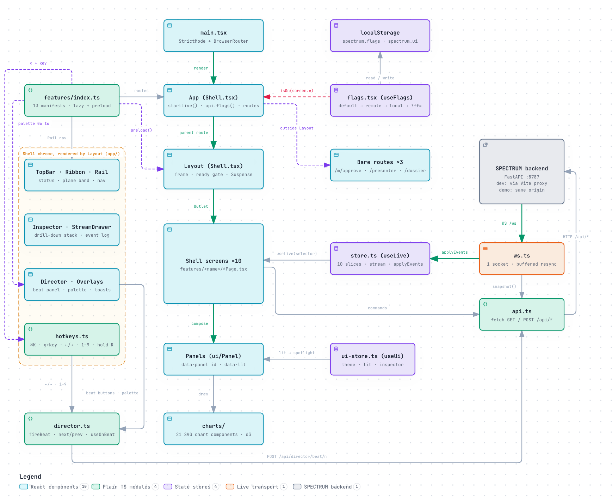
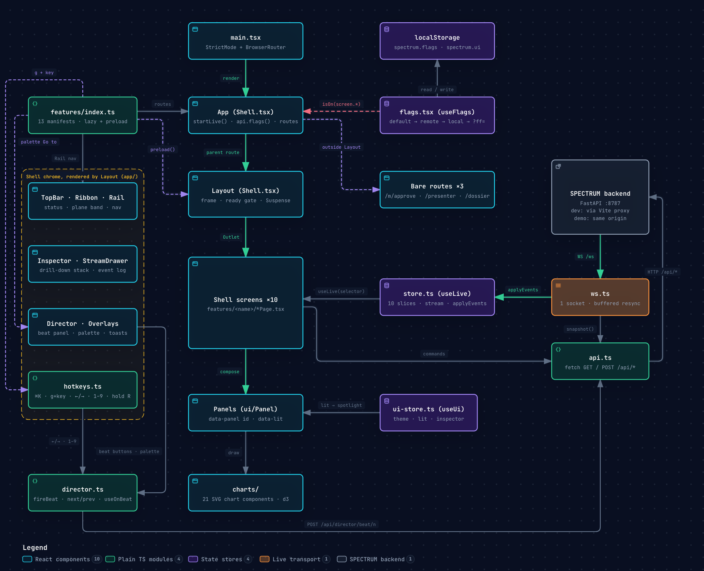
Frontend layers: shell, feature modules, core modules, UI kit and charts, and the one store they all read. Click the diagram to enlarge it. Open the interactive version
Think of it in five layers, from the outside in:
Shellapp/: frame, keys, director
Screensfeatures/<name>/ with a manifest
Building blocksui/ and charts/
Statecore/store.ts (live data) and core/ui-store.ts
Core modulescore/: socket, API, flags, director
Entry point and shell
index.html → src/main.tsx. Loads the fonts and index.css,
and renders <App/> inside React's StrictMode and a BrowserRouter.
App() in app/Shell.tsx. Writes the theme, motion, density and spotlight
choices onto the <html> element as data-* attributes; starts the live connection
once (startLive()); fetches the remote flags. It then builds the routes from the feature registry:
bare routes (phone approvals, presenter, dossier) render on their own; every other screen renders inside
Layout. A screen whose flag is off redirects to /, and so does any unknown path.
Layout. Installs the hotkeys and the "follow the director" behaviour, and 800 ms
after the first snapshot it preloads every screen's code so the first visit during the demo never waits. It draws
the top bar, the ribbon (flag shell.ribbon), the rail, the main area, the inspector, the stream
drawer (flag shell.stream), the Demo Director, the command palette, the help overlay and the toasts.
Until the snapshot has loaded, the main area shows "Connecting to the SPECTRUM engine", or "Backend unreachable"
with the start command.
Follow the director. When director.started_at changes (a beat fired from any
device), every console navigates to the beat's route (except phone and presenter pages), lights the beat's
spotlight panels if spotlight is on, and 450 ms later scrolls the first lit panel into view.
Shell components: app/
The frame around every screen. What each one shows on screen is covered in
Console frame & controls; this table is about how each is built.
File
What it is
How it works
TopBar.tsx
The 48 px bar at the top.
Reads conn, msgPerSec, clock, mode, pending approvals and autonomy from the store. The clock is interpolated locally four times a second between the once-a-second sim.clock syncs. The approvals flag turns amber when any pending SLA deadline is under 60 s away. Freeze is a press-and-hold button that calls POST /api/swarm/freeze (flag shell.killswitch); while the swarm is frozen it becomes a "Frozen: resume" button that calls POST /api/swarm/resume. A sun or moon button toggles the Ops and Projector themes. The operator-context dropdown only changes local state.
Ribbon.tsx
The five-plane lifecycle strip.
Reads five slices and picks a main and a side reading per plane; clicking a segment opens that plane's screen. Pulses come from live.pulses, added by the store when one of six events arrives. Carries data-panel="ribbon" so the spotlight can light it and never dims it.
Rail.tsx
The left navigation.
Lists non-bare features whose flag is on, sorted by nav.order; expands on hover to show labels and g hotkeys; badges for pending approvals and an active incident.
Director.tsx
The floating, draggable Demo Director (flag demo.director).
Shows the current beat's note, next and previous buttons, a pause button, speed (1×, 2×, 5×), a hold-to-reset button, the beat list, a Preflight tab, and Spotlight and Notes toggles (saved in spectrum.ui). Preflight polls GET /api/director/preflight every 10 s and draws the phone QR code with the qrcode library.
StreamDrawer.tsx
The bottom live event log.
Shows stream from the store (noisy telemetry excluded) with plane, minimum severity, text and "ledgered only" filters; any row opens in the inspector.
Inspector.tsx
The right-hand detail drawer, with a back stack of up to 10.
Kinds: ledger (fetches the record and its proof, recomputes the hash in the browser and lists five checks), agent (identity, a "Last hour" token and cost section that in fact counts since the last reset, messages, and a Quarantine or "Release with new identity" button; the release button calls POST /api/agents/{id}/release directly, with no approval), message (signature, authority and guardrail checks), policy, and raw JSON for everything else.
Overlays.tsx
Command palette, toasts, help.
The palette (Cmd/CtrlK) opens even when shell.palette is off; that flag only hides the top-bar search button. It lists "#N" to open a ledger record, every enabled screen, 17 global commands (GLOBAL_COMMANDS), any commands a manifest adds, the 14 beats, and agents once you type two letters. Toasts show at most three, each for 6 s. Help lists the keys.
hotkeys.ts
The global key map.
One keydown listener, ignored while typing. g then a letter finds the feature with that nav.hotkey. Arrows, Space and Page keys step beats; 1–9 fire beats; dnstl toggle UI; p calls POST /api/sim; holding r for 1 s calls reset; ? toggles help; Esc clears the spotlight and closes help.
Shell.tsx
Routes and layout.
Described above.
Feature registry and manifests
Each screen is a folder in src/features/ with a manifest.ts. The manifest declares an
id (which is also the screen's feature flag), a route, navigation details (label, icon,
plane colour, g hotkey, order), a title and description, the hackathon tracks it serves, a lazily loaded
component, a preload function, optional palette commands, and bare for pages
outside the frame. src/features/index.ts lists the 13 manifests. Routes, the rail, the palette's
"Go to" entries, the g hotkeys and the preload warm-up are all built from that one list, so removing a
screen means deleting its folder and its line in index.ts.
None of the current manifests defines its own commands; every palette action comes from
GLOBAL_COMMANDS in app/Overlays.tsx. How the screens split into independent work packages
is on Feature map & parallel build plan.
Frontend core modules: core/
store.ts: one store, one slice per engine
useLive is a single zustand store. It holds connection fields (ready, conn,
lastMsgAt, msgPerSec, mode, config), the sim clock,
one slice per engine (federation, proving, release, twin,
swarm, trust, ledger, oversight, observability,
director), the event stream, and live data that is not in the snapshot (latest
gradient histogram, latest secure-aggregation result, ribbon pulses).
loadSnapshot(s) replaces every slice with the snapshot's, marks the store ready and
keeps the non-noisy part of the snapshot stream.
Handlers. A map from event type to a small function that updates one slice, for example
fl.step updates each operator's step, loss and ε and appends to the step series;
ledger.append appends the record and moves the head; the seven incident-shaped events all replace
swarm.incident. A handler that throws is logged and skipped.
applyEvents(events) processes a whole WebSocket batch and then calls
setState once. Each slice touched in the batch is copied once (copy on write) and the handlers modify
the copy, so untouched slices keep their identity and their components do not re-render. Non-noisy events are
appended to stream (capped at 3,000); six event types add a ribbon pulse (kept 3 s).
NOISY is the set of ten high-rate telemetry types (fl.step,
fl.gradhist, twin.tick, obs.metrics, obs.span,
obs.trace, release.metrics, swarm.agents, sim.clock,
eval.progress). They update slices but are kept out of the stream drawer. They are the same ten types
the backend emits with record=False.
EMPTY is one shared empty array. Selectors write
s.oversight.items ?? EMPTY rather than ?? [], so an empty result has the same identity on
every render and does not trigger needless re-renders.
Arrays in slices are capped on the client, for example 600 ledger records, 600 step-series points, 300 messages
and 300 decisions.
ws.ts: connection, resync and status
Open /wsstart buffering events
GET /api/snapshotnote its seq
loadSnapshotreplace all slices
Replay bufferonly events with seq greater than the snapshot's
After that, each batch goes straight to applyEvents. A batch containing system.reset
triggers the same resync instead.
Some events raise a toast with a button that opens the right screen: critical events of selected types, plus
every approval.requested, incident.opened, eval.gate and
fl.budget.
Once a second it sets the connection status: offline if the socket is closed, live if
a message arrived in the last 2.5 s, otherwise lagging (the stream always carries at least the 1 Hz
clock and twin ticks, so silence means trouble). It also publishes events per second.
On close it reconnects with a back-off that starts at 500 ms and doubles up to 8 s.
It also fetches GET /api/config once to learn the mode (MOCK or AWS).
api.ts, director.ts, ui-store.ts, canonical.ts and the rest
Module
What it does
api.ts
get and post helpers that throw on a non-2xx status, and an api object with one method per endpoint (snapshot, config, flags, sim, fl, flConfig, projectedEps, checkpoint, flClient, reveal, evalRun, verifyAibom, release, inject, swarm, autonomy, agent, decide, verifyLedger, tamper, restoreLedger, record, proof, key, provenance, dossier, beat, reset, preflight).
flags.tsx
36 flag definitions in groups (screens, shell, demo, federation, verification, release, swarm, oversight, audit, observability), each with a stage (stable, beta, experimental, demo-only), a default and optional dependsOn. Resolution, last wins: code default → remote (/api/config/flags) → this browser (localStorage key spectrum.flags) → URL (?ff=fl.he:off,demo.tamper:on). A flag is on only if every flag it depends on is also on. useFlag and <Gate> read it. Presets: Demo (clears local overrides), Full (all on), Minimal (only stable on), Ops (demo-only off).
director.ts
fireBeat(n) navigates first (so it feels instant), sets the spotlight, then calls POST /api/director/beat/n and shows a toast if it fails. nextBeat, prevBeat. useOnBeat(n, cb) lets a screen run its own moment on a beat: Oversight selects the pending item (beat 9), Audit reloads provenance (beat 11) and starts a verification 1.2 s after the tamper (beat 12), Observability picks the incident trace (beat 13).
ui-store.ts
Browser-only state: theme (ops or projector), motion, density, rail, drawers, palette, help, director and notes, spotlight and the lit panel ids, the inspector stack and toasts. Theme, motion, density, director, notes and spotlight are saved in localStorage (spectrum.ui). useSimNow(hz) interpolates sim time between clock syncs; simClockLabel formats it in Pacific time.
canonical.ts
The browser twin of core.py: canonical(), sha256Hex() using WebCrypto (crypto.subtle), and recordHash() which recomputes a ledger hash exactly as the backend does.
features.ts
The FeatureManifest and Command types and defineFeature.
types.ts, format.ts, palette.ts
Shared types (event envelope, ledger record, operator, round, checkpoint, agent, message, approval, snapshot); number, byte, time and hash formatting; plane, operator and model colours read from CSS variables.
The engine slices are written only by loadSnapshot and applyEvents, with one exception:
the Swarm Tower's pause button copies the paused value from the API reply, because swarm pause emits no
event. ws.ts separately sets the connection fields (conn, msgPerSec,
config, mode).
UI kit: ui/
Panel.tsx.Panel is the card every screen is made of. Its
id becomes data-panel, which is what the spotlight targets; data-lit and a
plane-coloured outline mark lit panels. It can carry a table twin of its chart (a toggle in the header) and a
SourceChip. Also PageHeader and TrackTag.
SourceChip. In mock mode it shows a flask icon and the AWS service the panel
would read from, with a tooltip saying the data is simulated now. In AWS mode it shows the service name
alone.
controls.tsx.Button, IconButton,
HoldButton (press and hold, 1.2 s by default, used for Freeze and Reset), Segmented,
Toggle, Slider, Tabs, Kbd.
data.tsx.StatusPill, LiveDot, Hash,
CopyText, SignatureBadge, LedgerLink (opens a record in the inspector),
Stat, Meter, Steps, EmptyState, CodeBlock,
KV.
Chart catalogue: charts/
Twenty-one chart components plus shared plumbing in common.tsx (useSize,
useThemeKey, Tooltip, Legend, AXIS_TEXT,
DataTable, useAnimationFrame). Each is drawn from the props it is given; only SwarmGraph reads the live
store itself (agents, sites, messages and policy decisions).
Component
What it draws
Used by (screen: panel)
AreaStack
Stacked areas over time
Trust Center: policy decisions
BarList
Ranked horizontal bars
Trust Center: top denied; Proving Ground: scaling; Federation: homomorphic encryption
ChainStrip
Row of hash-chain blocks with verify states and anchor marks
Audit & Proof: hash chain
ConsortiumMap
Five operators on a ring around the enclave, with packets on the spokes
Mission Control: plane tiles; Swarm Tower: KPI strip, roster; Observability: golden signals, infrastructure; Federation: fleet GPU; the Stat component
StackedArea
Stacked areas
Observability: token cost
SwarmGraph
Force-directed graph of the agents and their messages
Swarm Tower: swarm
Waterfall
Trace spans as nested bars
Observability: trace
Mission Control's small network map is features/mission/MiniTwin.tsx, which lives with its screen
rather than in charts/.
Design tokens and themes: index.css
Two themes. Ops (dark, the default) and Projector (light), switched by
data-theme on <html>. Each defines surfaces, hairlines, three ink levels, focus
and scrim colours.
Plane colours.--learn, --verify, --release,
--operate, --prove (in Ops: violet #9085e9, amber #c98500,
blue #3987e5, green #199e70, orange #d95926). They mean "which plane",
never "good or bad".
Status colours.--good, --warn, --serious,
--critical (with readable -ink variants), always shown with an icon and a word.
Data colours. Eight series colours --s1 to --s8, a neutral series,
and sequential and diverging ramps for heatmaps.
Tailwind mapping. An @theme inline block turns the variables into utility classes
(bg-s1, text-ink-2, text-learn) and sets the type scale: 11, 12, 13, 15,
18, 24 and 40 px.
Spotlight. With data-spotlight="on", every panel that is not lit fades to 38%
opacity and loses some colour; lit panels get a 2 px outline in their plane colour; the ribbon never fades.
Accessibility and projectors. Motion is reduced when the operating system asks for it or when
data-motion="reduced" is set. data-density="compact" tightens panels for 1280 × 720
projectors.
Frontend module index (file, responsibility, key exports)
Barrel export of the UI kit (screens import from @/ui)
(re-exports)
src/ui/data.tsx
Data display atoms
StatusPill, Hash, SignatureBadge, LedgerLink, Stat, Meter, CodeBlock and others
src/charts/*.tsx
21 charts and shared plumbing
See the chart catalogue
src/features/index.ts
Feature registry
features
src/features/<screen>/
One folder per screen: manifest.ts, page and panels
default manifest
src/features/audit/verify.ts
Auditor-style chain verification behind the Audit page's verify run and the beat 12 auto-verify: the server walks every record while this browser recomputes SHA-256 for the blocks on screen; on a break it fetches the records around the broken one from the server
useVerify
src/features/observability/LogSearch.tsx
Event search with a small query language (plane:, actor:, type:, severity>=, plus free text)
MOCK_LABEL ("Illustrative mock results"), gateChecks, paretoIds and others
scripts/check-canonical.mjs
Cross-language hash check
(script)
scripts/shot.mjs
Headless screenshot helper for visual checks (playwright-core with the system Chrome)
(script)
Data and realtime
Data reaches the screen in three ways: one snapshot when a browser connects, a continuous stream of events after
that, and a few on-demand reads (a ledger record and its proof, the provenance graph, the dossier, the policy test
bench, AI-BOM verification, projected ε, preflight).
The event model
Every event is the same envelope, built by Bus.emit:
Field
Meaning
seq
Sequence number, one higher for every event in this process. Reset sets it back to 0.
ts, sim_t
Simulated timestamp (Pacific time) and sim seconds since the story's start.
plane
learn, verify, release, operate, prove or system.
type
Dotted name such as fl.round or approval.requested. The backend emits 60 different types.
severity
debug, info, notice, warn, critical.
actor, summary, data
Who did it, one human-readable line, and the payload the store handler uses.
ledger (optional)
{seq, hash} of the ledger record this event corresponds to, so the UI can link to the proof.
Events come in two kinds. Recorded events (state changes such as a round finishing, an approval, a ledger append)
go into the 20,000-event history and therefore into the next snapshot's stream. Telemetry events are
emitted with record=False: they go to connected browsers but are never stored, because a new browser
gets the same information from the snapshot. These are the ten "noisy" types listed under
store.ts.
Batching on both sides keeps the browser smooth: at most ten store updates a second, however many events the
engine produced. A batch is never split across renders, so the screen never shows half of a change (for example a
round finished but its ledger record missing).
Snapshot size
The snapshot grows as the demo runs. A sample taken from the running server late in a demo (beat 13, round 30
complete, 8,408 ledger records) was 996 KB of JSON. The biggest parts were the event stream (272 KB),
observability (194 KB), swarm (129 KB), the ledger tail (127 KB), twin (120 KB) and federation (119 KB). The
ledger part stays bounded because it carries only the last 150 records and 60 anchors; the rest of the chain is
fetched record by record when you open it. Right after a reset the snapshot is smaller, because the stream is
empty.
Determinism and seeding
One seed (SPECTRUM_SEED, default 7) drives everything. Each engine has its own NumPy random
generator seeded from it with a fixed offset (federation +3, proving +5, release +7, twin +11, observability
+13, swarm +17, warm-up +99), so one engine drawing more numbers does not change another's.
Keys are derived from the seed, and warm-up advances in fixed 0.1 s steps, so two engines built with the same
seed reach the same ledger head hash. The first backend test checks exactly this.
After warm-up the live loop advances by the real time between ticks, and people click at different moments.
So every run follows the same script and the same numbers to start with, but small details (an exact loss value,
which site agent acts next) differ from run to run.
Two flows end to end
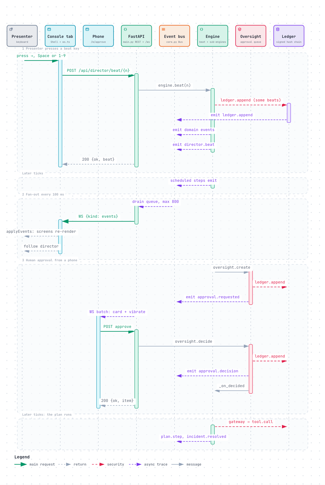
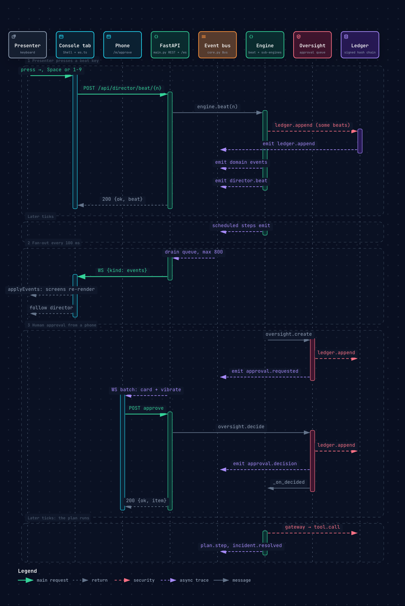
A demo beat end to end: key press, local navigation and spotlight, the REST call, the engine action, the director.beat event, and every other console following. Click the diagram to enlarge it. Open the interactive version
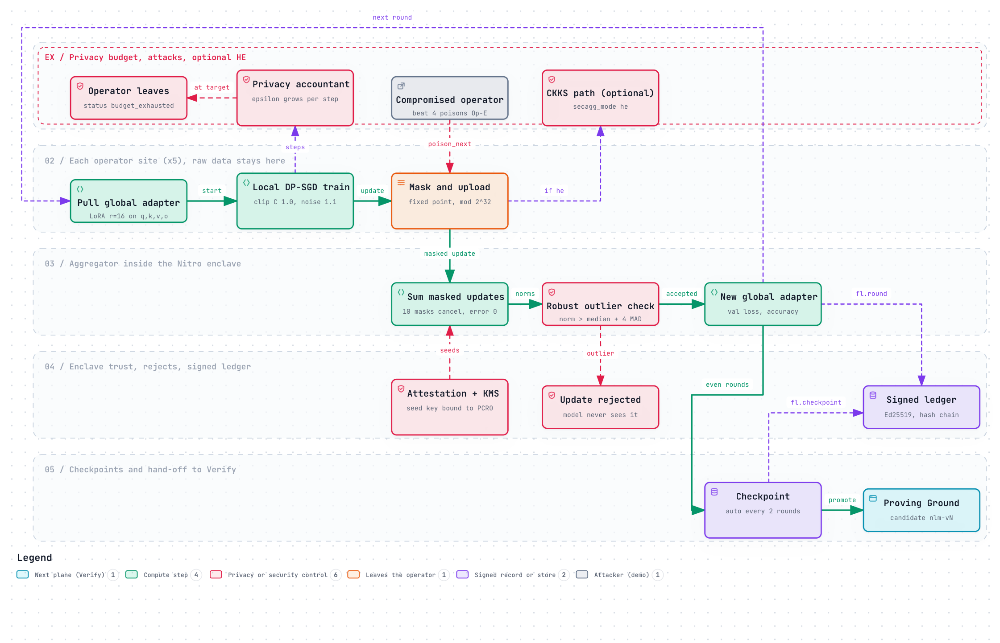
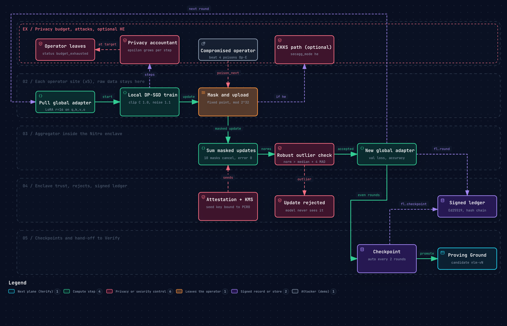
One federated round: pull, local DP-SGD training, masking, upload, robust aggregation in the enclave, the signed round record and the checkpoint. Click the diagram to enlarge it. Open the interactive version
What is real and what is simulated
The UI says this itself: the top bar shows MOCK, and most panels carry a source chip naming the AWS service
they would read from. Here is the precise split, checked against the code.
Real code, real results
Ledger: SHA-256 hash chain over canonical JSON, Ed25519 signatures, Merkle anchors every 32 records, full verification, inclusion proofs, tamper detection at the exact record.
The browser recomputing a record's hash with WebCrypto, and the cross-language test that checks Python and JavaScript hash the same records identically (the test script re-implements canonical() in Node rather than importing the shipped module).
Secure-aggregation arithmetic: pairwise masks over integers modulo 232 that cancel with zero error.
Signed agent-to-agent messages and the authority-mismatch check.
Policy decisions: a deterministic evaluator enforced outside the agents, including delegation checks, quarantine and revocation.
AI-BOM digest and signature, and its verify endpoint; signed release manifests; signed human decisions.
Four-eyes rule, SLA timers and escalation (on the sim clock).
Pre-flight: the plan's steps are really applied to the (simulated) twin with events muted, the KPIs are measured, and the saved state is restored.
Simulated or illustrative
Training: no model is trained. Loss and accuracy follow formulas plus noise; ε uses a documented approximation.
The homomorphic-encryption panel's numbers and the enclave attestation values (fixed strings).
The twin's KPIs and faults.
Agents: no language model is called. Latency and token counts are drawn at random; the incident and attack are scripted.
Benchmark scores (illustrative, not results for the named products), federated eval scores, shadow agreement.
Token prices (modelled list prices), the "frontier model" cost comparison, SLOs (fixed values).
S3 anchor version ids and ETags, the Step Functions execution ARN, policy decision latencies (computed from a formula; only the test bench measures real time).
Security and trust architecture
The design idea is that agents and models are never trusted to police themselves. Every claim the console makes
("this action was allowed", "a human approved it", "this model was tested") is backed by a signed record that
anyone can re-check.
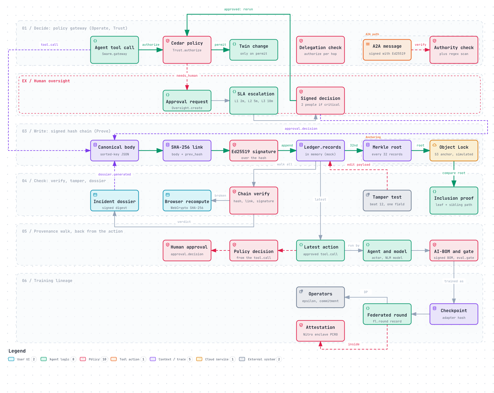
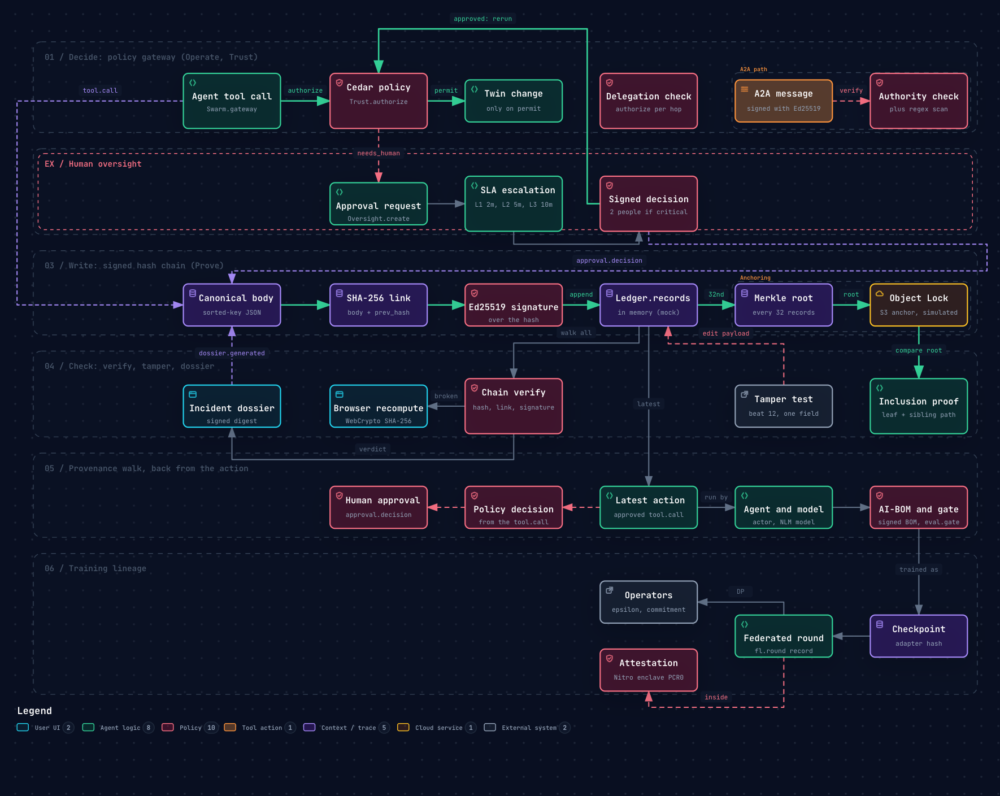
The trust and proof chain: identity, policy gateway, human approval, signed records, hash chain and Merkle anchors. Click the diagram to enlarge it. Open the interactive version
Signing: who signs what
Each identity has its own key in the key ring. The ledger signs each record's hash with the key of whoever wrote
it; some objects are also signed on their own.
Key id
Signs
kms:spectrum/agent/<id>
Each agent's tool.call and a2a.message records, and the message itself. Revoked on quarantine; a released agent gets a new key id ending in #n.
kms:spectrum/human/<id>
Approval decisions (the decision digest and the ledger record), training config changes, checkpoint restores, training stop, identity reissue, swarm freeze and resume.
kms:spectrum/aggregator
fl.round and fl.checkpoint.
kms:spectrum/operator/<op>
Each operator's private evaluation score.
kms:spectrum/proving-ground, kms:spectrum/aibom
Gate and federated-eval records; the AI-BOM.
kms:spectrum/release
Release manifests and release.stage records.
kms:spectrum/auditor
The dossier.
kms:spectrum/<actor>
Default for records written without an explicit key (for example approval requests and escalations).
Because of that default, operator autonomy changes (POST /api/autonomy) and manual quarantines from
the Inspector or roster are signed with kms:spectrum/human:a.rivera (with a colon), a different key id
from the kms:spectrum/human/a.rivera that approvals use.
Hash chain, tamper test and Merkle anchors
Each record's hash covers its body and the previous record's hash, so changing any record changes every hash after
it. The signature is over the stored hash. A tamper therefore leaves the signature valid but makes the recomputed
hash disagree with the stored one:
Tamperone payload field changed in place
Verifyrecomputed hash ≠ stored hash at that record
Proofleaf recomputed from the body; root ≠ anchored root
Result"chain broken at #N", with a field diff
To hide the edit, an attacker would have to recompute every later hash, re-sign every record with keys they should
not hold, and still could not change the anchor roots, which in production would sit in S3 Object Lock in
COMPLIANCE mode (no one, including the account owner, can delete or overwrite them until the retention date).
Every 32 records the ledger computes a Merkle root (a single hash that summarises all 32, so proving one record is
included needs only five sibling hashes). The browser draws that proof in MerkleTree and recomputes the
record hash itself in the Inspector.
The policy gateway
Agent asksSwarm.gateway(agent, tool, params)
Kill switchfrozen: deny all but two read tools
PolicyTrust.authorize: permit, needs human or deny
Ledgertool.call with the decision and policies
Twinchanged only on permit
Decisions are made outside the agent, from the agent's identity, class, autonomy level and allowed sites, the
resource's tags, and the context (blast radius, number of targets, plan id, human approval, delegation chain).
Default is deny: an action no rule permits is refused (default-deny).
The gateway executes only on permit. In the incident, the coordinator's three radio steps come back "needs human"
(P-003, blast radius over 5%), so the swarm opens an approval. After approval the steps are submitted again with
human_approved set, and pass.
The 13 policies and their Cedar text appear in the Policy store panel of the Trust Center screen (see Trust Center). The Cedar text
is shown and hashed; the decisions come from the Python mirror of it.
Delegation, guardrails, quarantine and autonomy
Delegation. An agent cannot borrow another agent's permissions. check_delegation
evaluates the action for every agent in the chain and denies the whole request if any one of them is not allowed
(P-006). This blocks the "confused deputy" move in the attack, where site-17 tries to get the transport agent to
act for it.
Authority check. Every agent-to-agent message records who it claims to speak for. If that is
not the signer, the message is blocked. The four messages site-17 sends "on behalf of the coordinator" fail this
check.
Guardrails. Suspicious message text is scanned with four prompt-attack patterns. The UI also
shows counters for PII, denied topics and grounding; only the prompt-attack counter is ever incremented.
Quarantine. Quarantining an agent sets its status, drops its trust to 12, revokes its key and
writes identity.revoked. From then on P-008 denies everything it asks for and its messages fail
verification. The attack script opens a critical-tier approval ("Release site-17 from quarantine") that needs
two different approvers; approving it releases the agent with a new key id. The Inspector's "Release with new
identity" button and the Agent roster's Release button call POST /api/agents/{id}/release, which
releases at once with no approval. Use the Oversight Desk path on stage.
Autonomy. Levels follow the TM Forum autonomous-network scale (L0 to L5). An agent below L3
needs a human for any radio change (P-009). After the attack, site agents drop from L4 to L3 automatically until a
person restores them; every change is ledgered.
Kill switch. Freeze (top bar, press and hold) denies every action except reading KPIs and
simulating, until resumed. Both are ledgered and signed by the human.
Human in the loop
Each approval carries the plan, the pre-flight before and after numbers, the policies that require it, the
recorded dissent and the opinions of the production and shadow models.
Each level of the ladder has a deadline (L1 2 min, L2 5 min, L3 10 min of sim time). A missed deadline escalates
to the next person and is ledgered.
Critical items need two different approvers (four-eyes); the same person approving twice is ignored.
"Approve with changes" lets the approver narrow a step (for example fewer cells); the swarm applies the change
before executing and records who changed it.
Phones use the same endpoint with device: "mobile"; the decision record says which device was
used.
AWS mapping
How each part would run on AWS, and how far the code has got. "Stub" means a class in adapters/aws.py
with the right boto3 call, not called by any engine and untested against a live account. "Planned" means the
mapping is only described in a docstring or the README. "Needs region check" repeats the README's warning to confirm
the service is available in the event account's region before relying on it.
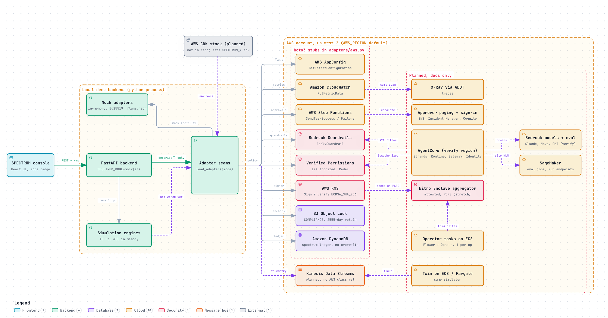
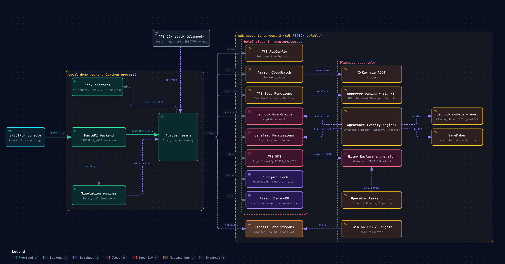
The AWS target deployment, with each adapter seam marked as stub or planned. Click the diagram to enlarge it. Open the interactive version
Seam
Today (mock)
AWS service
Status
Ledger records
Python list in Ledger
DynamoDB table spectrum-ledger, conditional put so a sequence number can never be overwritten
StubDynamoLedgerStore
Anchors
Python list; S3 metadata derived from hashes
S3 PutObject with Object Lock COMPLIANCE, 2,555-day retention, SHA-256 checksum
StubS3ObjectLockAnchors
Signing
Ed25519 KeyRing
KMS Sign and Verify
StubKmsSigner uses ECDSA_SHA_256, while records today say alg: Ed25519
StubVerifiedPermissions; the README also lists AgentCore Policy Needs region check
Guardrails
Four regular expressions
Bedrock ApplyGuardrail
StubBedrockGuardrails
Human approvals
In-memory queue in Oversight
Step Functions task tokens (SendTaskSuccess / SendTaskFailure); SNS or Incident Manager for paging; Cognito sign-in
StubStepFunctionsApprovals (completion only); paging and sign-in planned
Metrics and traces
Frames and spans in Observability
CloudWatch PutMetricData; X-Ray through ADOT
StubCloudWatchMetrics; traces planned
Feature flags
flags.json
AWS AppConfig GetLatestConfiguration
StubAppConfigFlags; /api/config/flags still reads the file in both modes
Telemetry
Twin.tick
Kinesis Data Streams PutRecords
Planned listed as a seam, no AWS class
Twin hosting
In process
ECS or Fargate
Planned
Federated clients
Simulated in Federation
One ECS task per operator running Flower and Opacus, own IAM role and S3 bucket
Planned
Aggregator
Simulated; static attestation
Nitro Enclave; KMS releases mask seeds only to the attested image (PCR0 is a hash that measures the exact enclave image)
Planned
Verification pipeline
Simulated stages in Proving
Step Functions, SageMaker Processing, Bedrock model evaluation, KMS-signed AI-BOM
Planned
Deployment
Simulated in Release
SageMaker endpoint variants or inference components, Bedrock Custom Model Import, ECS edge services, CDK
Planned; Bedrock Custom Model Import Needs region check (and supported architectures)
Agents
Scripted and random in Swarm
Strands Agents on Bedrock AgentCore Runtime, Gateway (tools as MCP), Identity; agent-to-agent over AgentCore with an EventBridge or SQS fallback
Planned; AgentCore and its A2A support Needs region check
Known gaps and limitations
Each item below was checked in the code. Knowing them keeps you honest in front of judges and stops you promising
something the console does not do.
AWS and production readiness
AWS adapters are not wired. No engine calls an adapter; GET /api/config only
describes them. Setting SPECTRUM_MODE=aws would turn the badge to AWS and change the
source chips while every number still comes from the mock engine (and it needs boto3 installed). Do
not run the demo in AWS mode.
Signing algorithm mismatch. The KMS stub signs with ECDSA P-256; ledger records hard-code
Ed25519. Switching would need the alg field and the browser's labels to follow.
Keys come from a public seed. Anyone with the code and the seed can derive every private key.
The mock proves the mechanics of signing and verification, not real identity.
No authentication. CORS allows any origin and no endpoint checks who is calling. The approver is
taken from the request body (a.rivera, j.okafor or m.chen; anything else is
recorded as A. Rivera). Fine on a demo network, not elsewhere.
Everything is in memory. The ledger grows without limit while the process runs and is lost when
it stops; reset rebuilds it from the seed.
Behaviour that looks more complete than it is
Rollout pause is cosmetic.POST /api/release/pause flips a flag that the UI shows as
"Paused", but Release.tick() and advance() never read it.
Only one release guard acts. Four guard limits are shown; automatic rollback happens only on
error rate above 1%. p95, safety incidents and agreement are displayed, not enforced.
Circuit breakers never trip. Message rate, changes per hour and blast budget are computed, but
nothing fills the tripped list or counts rollbacks, so the panel always reads "All clear" unless the
swarm is frozen by hand.
SLOs are fixed values.slos() returns constants. The "frontier model" cost of an
incident is a formula (cost × 3.5 + 0.6).
Homomorphic encryption is illustrative. No CKKS runs. Both modes produce the same noise-budget
numbers; he mode only makes the secure phase 1.6 times longer and makes the server blind to the
poisoned update.
Attestation is static. The enclave image name, PCR values and verified: true are
fixed. Robust aggregation is the Python median filter, not code inside an enclave.
The gate does not call the policy engine. Proving checks its own constants; the ledger record
names P-012.
Routine actions do not move KPIs.set_handover_offset, the action site agents take
all the time, is ledgered but changes nothing in the twin.
Guardrails are four patterns. The PII, denied-topic and grounding counters stay at zero.
Two flags do nothing, and bare routes ignore their flags.demo.spotlight is
defined but never read, and oversight.mobile is only the phone page's manifest id. The bare routes
(/m/approve, /presenter, /dossier/...) are never flag-checked, so turning off
demo.director or audit.dossier hides the Director panel or the Audit page's dossier card
but does not block those pages.
The reveal flag does nothing visible. Beat 3 and POST /api/fl/reveal set
fl.reveal, which no screen reads. The "Show true updates" button in the Secure aggregation panel is
local to the browser and appears only when demo.privileged_view is on.
Quarantine release can skip four-eyes. The two-approver rule applies only to the scripted
approval. The Inspector's "Release with new identity" button and the Agent roster's Release button release the
agent at once. Do not click them on stage.
Expired approvals are silent. After L3's deadline an item becomes expired with no
event and no ledger record, so open consoles keep showing it as pending until they next load a snapshot.
Some policy checks are not ledgered. The "needs human" checks the incident runs before opening
its approval, and the attack's delegation check, are counted in the Trust Center but never written to the
ledger as tool.call records.
Release manifests are not linked to the checkpoint. Each manifest's adapter_hash
is SHA-256 of "adapter-" + version, not the checkpoint's adapter hash that the AI-BOM records.
"Last hour" is not an hour. Agents' tokens_1h and usd_1h only ever
grow, so the Inspector's "Last hour" section shows totals since the last reset, including warm-up.
Two key ids for one person. Autonomy changes and manual quarantines are signed with
kms:spectrum/human:a.rivera; approvals use kms:spectrum/human/a.rivera.
The operator-context dropdown in the top bar changes nothing outside itself.
Runtime and testing
Some calls pause the simulation. Because handlers share the event loop, a reset (about 2 s), a
full ledger verification (the code comments say 0.5 to 0.9 s) and every dossier request (which runs a full
verification) pause the engine and the WebSocket while they run. The preflight endpoint caches its verification
to avoid this on every poll.
A GET that writes.GET /api/dossier/{incident} appends a signed
dossier.generated record every time it is called.
No gap detection. If a browser's queue ever filled up (50,000 events), events would be dropped
for that browser and it would not notice until its next resync; the client does not check seq for
holes.
WebCrypto needs a secure context. Browsers only offer crypto.subtle on
https or localhost. On a console opened at http://<LAN IP>, both
the Inspector's browser recompute (check 1 spins forever) and the Audit page's chain verification fail; the
verification that beat 12 starts never finishes, so the tamper test does not animate. Drive the projector from
the machine running the server, at localhost.
Tests are backend-only. Six backend tests, the cross-language hash check and a type check. There
are no frontend unit or browser tests.
If a judge asks "what is real?"
"The cryptography and the controls are real: the hash chain, the signatures, the Merkle proofs, the secure
aggregation maths, the policy decisions and the approvals all run real code. The network, the training curves and
the agents' reasoning are simulated so the whole lifecycle fits in seven minutes. Every panel tells you which AWS
service it maps to, and the adapters for those services are the next step."